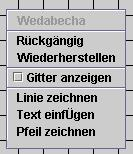

Hilfe u. Dokumentation für WeDaBeCha
Werkzeug zur grafischen Darstellung und Beschriftung von Charts
1. Erklärung der einzelnen Menüpunkte
| Datei --> Öffnen Datei --> Tabelle importieren Datei --> Tabellen verknüpfen Datei --> Tabelle exportieren Datei --> Grafik exportieren Datei --> Programm beenden Ansicht --> Gitter anzeigen Ansicht --> Werkzeugleiste anzeigen Hilfe --> Kurzanleitung Hilfe --> Dokumentation Hilfe --> über |
öffnet eine .weda-Datei zur Weiterverarbeitung eine oder mehrere Tabellen öffnen verknüpft zwei oder mehr Tabellen in frei wählbarer Reihenfolge exportiert die eingelesenen und/oder verknüpften Tabellen in eine .csv-Datei exportiert den angezeigten Chart in eine .jpg-Datei beendet WeDaBeCha blendet das Gitter ein oder aus blendet die Werkzeugleiste ein oder aus blendet eine Kurzanleitung ein zeigt diese Dokumentation ein zeigt kurze Informationen über das Programm an |
2. Tabellen importieren
Mit einem Klick auf "Tabelle importieren" im Menü Datei werden die Daten für
die graphische Auswertung in Wedabecha geladen. Zuerst klicken sie dazu in der
ersten Zeile auf "öffnen". Im Dateiauswahldialog, den sie durch einen Klick auf
"Durchsuchen" aufrufen, geben sie ihre erste Datendatei an. Ein Klick auf Öffnen
und nun müssen das Datumsformat und das Trennzeichen angegeben werden. Mit einem
Klick auf OK ist die Vorbereitung für den Import der ersten Tabelle abgeschlossen. Sie können weitere
Tabellen importieren, indem sie die Zeilen 2 bis 5 nach der gleichen
Verfahrensweise "ausfüllen". Die Option "Speichern" hinter der jeweiligen Zeile
speichert auf Wunsch die Tabelle als .csv-Datei (einheitliches Format für
Tabellen). Beim nächsten Mal müssen dann nicht Datumsformat und Trennzeichen
angegeben werden.
Beabsichtigen sie, Tabellen zu verknüpfen, müssen sie den Haken bei "Speichern" setzen.
Ein Klick auf OK übergibt dem Programm die Tabelle(n).
3. Tabellen exportieren
Mit einem Klick auf diesen Menüpunkt speichert das Programm die momentan in der Auswertung befindlichen Tabellendaten in das .csv-Format zur weiteren Bearbeitung z.B. in Excel. Einfach im Dateiauswahldialog einen Namen vergeben. Fertig.
4. Zeichnen von Linien und Pfeilen, Annotation
Ein Klick auf das Icon "Linie" oder "Pfeil" ruft den Editor-Modus auf. Nun ein Linksklick auf den Anfangspunkt und einen auf den Endpunkt. Mit dem Text funktioniert es genauso (nur ohne Endpunkt).
5. Tabellen verknüpfen:
Um Tabellen verknüpfen zu können müssen sie zunächst importiert werden. Danach den Menüpunkt "Tabellen verknüpfen" im Menü Datei auswählen. Jetzt können sie die maximal 5 importierten Tabellen zur Auswahl hinzufügen oder entfernen und nach Belieben nach oben oder unten verschieben, um somit die Reihenfolge der Verknüpfung festzulegen. Mit einem Klick auf "Speichern" werden die Tabellen zusammengefasst und im Arbeitsverzeichnis von Wedabecha unter dem angegebenen Dateinamen gespeichert.
6. Kontextmenü

Die Funktionen "Rückgängig", "Wiederherstellen", "Gitter anzeigen", "Linie zeichnen", "Pfeil zeichnen" und "Text einfügen" können auch über einen Rechtklick auf die Arbeitsfläche im Kontextmenü aufgerufen werden.